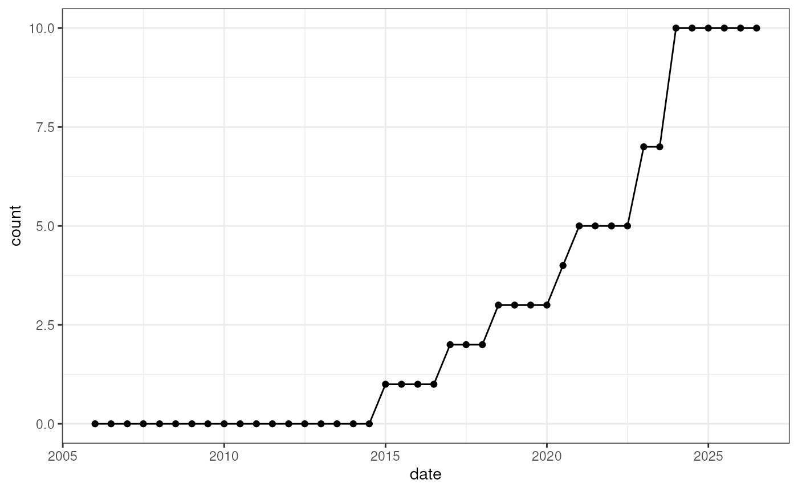

Contributors
Kevin Rue-Albrecht
University of Oxfordkevin.rue-albrecht@imm.ox.ac.uk
16 March 2026
Contributors.RmdLibraries
Attach packages used in this vignettes.
library("BiocPkgTools")
#> Loading required package: htmlwidgets
library("BiocPkgToolsPlus")
#> Loading required package: biocViews
library("ggplot2")First step
Fetch the combined listing of packages from all Bioconductor repositories.
bioc_pkg_list <- get_all_biocpkglist(verbose = FALSE)
bioc_pkg_list
#> # A tibble: 3,753 × 49
#> Package Version Depends Suggests License MD5sum NeedsCompilation Title
#> <chr> <chr> <list> <list> <chr> <chr> <chr> <chr>
#> 1 a4 1.58.0 <chr [5]> <chr [7]> GPL-3 56d24… no "Aut…
#> 2 a4Base 1.58.0 <chr [2]> <chr [4]> GPL-3 5efa1… no "Aut…
#> 3 a4Classif 1.58.0 <chr [2]> <chr [4]> GPL-3 20d28… no "Aut…
#> 4 a4Core 1.58.0 <chr [1]> <chr [2]> GPL-3 bd94b… no "Aut…
#> 5 a4Preproc 1.58.0 <chr [1]> <chr [4]> GPL-3 2c56d… no "Aut…
#> 6 a4Reporting 1.58.0 <chr [1]> <chr [2]> GPL-3 9d31f… no "Aut…
#> 7 ABarray 1.78.0 <chr [1]> <chr [2]> GPL 6ad7c… no "Mic…
#> 8 abseqR 1.28.0 <chr [1]> <chr [1]> GPL-3 … 9ec04… no "Rep…
#> 9 ABSSeq 1.64.0 <chr [2]> <chr [1]> GPL (>… b12fd… no "ABS…
#> 10 acde 1.40.0 <chr [2]> <chr [2]> GPL-3 c04fa… no "Art…
#> # ℹ 3,743 more rows
#> # ℹ 41 more variables: Description <chr>, biocViews <list>, Author <list>,
#> # Maintainer <list>, git_url <chr>, git_branch <chr>, git_last_commit <chr>,
#> # git_last_commit_date <chr>, `Date/Publication` <chr>, source.ver <chr>,
#> # win.binary.ver <chr>, `mac.binary.big-sur-x86_64.ver` <chr>,
#> # `mac.binary.big-sur-arm64.ver` <chr>, vignettes <list>,
#> # vignetteTitles <list>, hasREADME <chr>, hasNEWS <chr>, hasINSTALL <chr>, …Fetch historical information about each package.
bioc_years <- getPkgYearsInBioc()
bioc_years
#> # A tibble: 6,210 × 8
#> package category first_version_available first_version_release…¹
#> <chr> <chr> <chr> <date>
#> 1 ABAData data/experiment 3.2 2015-10-14
#> 2 ABAEnrichment bioc 3.2 2015-10-14
#> 3 ABSSeq bioc 2.14 2014-04-14
#> 4 ABarray bioc 1.9 2006-10-04
#> 5 ACE bioc 3.8 2018-10-31
#> 6 ACME bioc 2.0 2007-04-26
#> 7 ADAM bioc 3.9 2019-05-03
#> 8 ADAMgui bioc 3.9 2019-05-03
#> 9 ADAPT bioc 3.20 2024-10-30
#> 10 ADImpute bioc 3.12 2020-10-28
#> # ℹ 6,200 more rows
#> # ℹ abbreviated name: ¹first_version_release_date
#> # ℹ 4 more variables: approx_years_in <dbl>, last_version_available <chr>,
#> # last_version_release_date <date>, years_before_rm <dbl>Use cases
List of packages by contributor
The same person may be known by different name in different packages. The function requires a named list:
- The name defines how they will be known in this analysis.
- The value is a character vector listing all their aliases to consider.
out <- get_packages_by_author(
author = author,
pkg_list = bioc_pkg_list
)
out
#> $Maintainer
#> [1] "GOexpress" "iSEE" "iSEEde" "iSEEhex" "iSEEhub"
#> [6] "iSEEindex" "iSEEpathways" "iSEEu" "TVTB" "velociraptor"
#>
#> $Author
#> [1] "BiocCheck" "BiocSet" "GOexpress"
#> [4] "iSEE" "iSEEde" "iSEEhex"
#> [7] "iSEEhub" "iSEEindex" "iSEEpathways"
#> [10] "iSEEu" "SingleCellExperiment" "TVTB"
#> [13] "velociraptor"One could then follow up by tracking how many of those packages the person has maintained over the years.
out2 <- get_packages_counts_over_time(
packages = out$Maintainer,
pkg_list = bioc_pkg_list,
pkg_years = bioc_years
)
out2
#> # A tibble: 42 × 2
#> date count
#> <date> <int>
#> 1 2006-01-01 0
#> 2 2006-07-01 0
#> 3 2007-01-01 0
#> 4 2007-07-01 0
#> 5 2008-01-01 0
#> 6 2008-07-01 0
#> 7 2009-01-01 0
#> 8 2009-07-01 0
#> 9 2010-01-01 0
#> 10 2010-07-01 0
#> # ℹ 32 more rows
ggplot(out2, aes(x = date, y = count)) +
geom_line() +
geom_point() +
theme_bw()
Number of packages maintained by ‘Kevin Rue’ over time.
Reproducibility
The BiocPkgToolsPlus package (kevinrue, 2026) was made possible thanks to:
- R (R Core Team, 2025)
- BiocStyle (Oleś, 2025)
- knitr (Xie, 2025)
- RefManageR (McLean, 2017)
- rmarkdown (Allaire, Xie, Dervieux, McPherson, Luraschi, Ushey, Atkins, Wickham, Cheng, Chang, and Iannone, 2025)
- sessioninfo (Wickham, Chang, Flight, Müller, and Hester, 2025)
- testthat (Wickham, 2011)
This package was developed using biocthis.
Code for creating the vignette
## Create the vignette
library("rmarkdown")
system.time(render("BiocPkgToolsPlus.Rmd", "BiocStyle::html_document"))
## Extract the R code
library("knitr")
knit("BiocPkgToolsPlus.Rmd", tangle = TRUE)Date the vignette was generated.
#> [1] "2026-03-16 08:56:52 UTC"Wallclock time spent generating the vignette.
#> Time difference of 7.555 secsR session information.
#> ─ Session info ───────────────────────────────────────────────────────────────────────────────────────────────────────
#> setting value
#> version R version 4.5.2 (2025-10-31)
#> os Ubuntu 24.04.3 LTS
#> system x86_64, linux-gnu
#> ui X11
#> language en
#> collate en_US.UTF-8
#> ctype en_US.UTF-8
#> tz UTC
#> date 2026-03-16
#> pandoc 3.8.2.1 @ /usr/bin/ (via rmarkdown)
#> quarto 1.7.32 @ /usr/local/bin/quarto
#>
#> ─ Packages ───────────────────────────────────────────────────────────────────────────────────────────────────────────
#> package * version date (UTC) lib source
#> backports 1.5.0 2024-05-23 [1] RSPM (R 4.5.0)
#> bibtex 0.5.2 2026-02-03 [1] RSPM (R 4.5.0)
#> Biobase 2.70.0 2025-10-29 [1] Bioconductor 3.22 (R 4.5.2)
#> BiocFileCache 3.0.0 2025-10-29 [1] Bioconductor 3.22 (R 4.5.2)
#> BiocGenerics 0.56.0 2025-10-29 [1] Bioconductor 3.22 (R 4.5.2)
#> BiocManager 1.30.27 2025-11-14 [2] CRAN (R 4.5.2)
#> BiocPkgTools * 1.28.3 2026-02-05 [1] Bioconductor 3.22 (R 4.5.2)
#> BiocPkgToolsPlus * 0.99.0 2026-03-16 [1] Bioconductor
#> BiocStyle * 2.38.0 2025-10-29 [1] Bioconductor 3.22 (R 4.5.2)
#> biocViews * 1.78.0 2025-10-29 [1] Bioconductor 3.22 (R 4.5.2)
#> bit 4.6.0 2025-03-06 [1] RSPM (R 4.5.0)
#> bit64 4.6.0-1 2025-01-16 [1] RSPM (R 4.5.0)
#> bitops 1.0-9 2024-10-03 [1] RSPM (R 4.5.0)
#> blob 1.3.0 2026-01-14 [1] RSPM (R 4.5.0)
#> bookdown 0.46 2025-12-05 [1] RSPM (R 4.5.0)
#> bslib 0.10.0 2026-01-26 [2] RSPM (R 4.5.0)
#> cachem 1.1.0 2024-05-16 [2] RSPM (R 4.5.0)
#> cli 3.6.5 2025-04-23 [2] RSPM (R 4.5.0)
#> curl 7.0.0 2025-08-19 [2] RSPM (R 4.5.0)
#> DBI 1.3.0 2026-02-25 [1] RSPM (R 4.5.0)
#> dbplyr 2.5.2 2026-02-13 [1] RSPM (R 4.5.0)
#> desc 1.4.3 2023-12-10 [2] RSPM (R 4.5.0)
#> digest 0.6.39 2025-11-19 [2] RSPM (R 4.5.0)
#> dplyr 1.2.0 2026-02-03 [1] RSPM (R 4.5.0)
#> DT 0.34.0 2025-09-02 [1] RSPM (R 4.5.0)
#> evaluate 1.0.5 2025-08-27 [2] RSPM (R 4.5.0)
#> farver 2.1.2 2024-05-13 [1] RSPM (R 4.5.0)
#> fastmap 1.2.0 2024-05-15 [2] RSPM (R 4.5.0)
#> filelock 1.0.3 2023-12-11 [1] RSPM (R 4.5.0)
#> fs 1.6.7 2026-03-06 [2] RSPM (R 4.5.0)
#> generics 0.1.4 2025-05-09 [1] RSPM (R 4.5.0)
#> ggplot2 * 4.0.2 2026-02-03 [1] RSPM (R 4.5.0)
#> gh 1.5.0 2025-05-26 [2] RSPM (R 4.5.0)
#> glue 1.8.0 2024-09-30 [2] RSPM (R 4.5.0)
#> graph 1.88.1 2025-12-08 [1] Bioconductor 3.22 (R 4.5.2)
#> gtable 0.3.6 2024-10-25 [1] RSPM (R 4.5.0)
#> hms 1.1.4 2025-10-17 [1] RSPM (R 4.5.0)
#> htmltools 0.5.9 2025-12-04 [2] RSPM (R 4.5.0)
#> htmlwidgets * 1.6.4 2023-12-06 [2] RSPM (R 4.5.0)
#> httr 1.4.8 2026-02-13 [1] RSPM (R 4.5.0)
#> httr2 1.2.2 2025-12-08 [2] RSPM (R 4.5.0)
#> igraph 2.2.2 2026-02-12 [1] RSPM (R 4.5.0)
#> jquerylib 0.1.4 2021-04-26 [2] RSPM (R 4.5.0)
#> jsonlite 2.0.0 2025-03-27 [2] RSPM (R 4.5.0)
#> knitr 1.51 2025-12-20 [2] RSPM (R 4.5.0)
#> labeling 0.4.3 2023-08-29 [1] RSPM (R 4.5.0)
#> lifecycle 1.0.5 2026-01-08 [2] RSPM (R 4.5.0)
#> lubridate 1.9.5 2026-02-04 [1] RSPM (R 4.5.0)
#> magrittr 2.0.4 2025-09-12 [2] RSPM (R 4.5.0)
#> memoise 2.0.1 2021-11-26 [2] RSPM (R 4.5.0)
#> otel 0.2.0 2025-08-29 [2] RSPM (R 4.5.0)
#> pillar 1.11.1 2025-09-17 [2] RSPM (R 4.5.0)
#> pkgconfig 2.0.3 2019-09-22 [2] RSPM (R 4.5.0)
#> pkgdown 2.2.0 2025-11-06 [2] RSPM (R 4.5.0)
#> plyr 1.8.9 2023-10-02 [1] RSPM (R 4.5.0)
#> purrr 1.2.1 2026-01-09 [2] RSPM (R 4.5.0)
#> R6 2.6.1 2025-02-15 [2] RSPM (R 4.5.0)
#> ragg 1.5.1 2026-03-06 [2] RSPM (R 4.5.0)
#> rappdirs 0.3.4 2026-01-17 [2] RSPM (R 4.5.0)
#> RBGL 1.86.0 2025-10-29 [1] Bioconductor 3.22 (R 4.5.2)
#> RColorBrewer 1.1-3 2022-04-03 [1] RSPM (R 4.5.0)
#> Rcpp 1.1.1 2026-01-10 [2] RSPM (R 4.5.0)
#> RCurl 1.98-1.17 2025-03-22 [1] RSPM (R 4.5.0)
#> readr 2.2.0 2026-02-19 [1] RSPM (R 4.5.0)
#> RefManageR * 1.4.0 2022-09-30 [1] RSPM (R 4.5.0)
#> rlang 1.1.7 2026-01-09 [2] RSPM (R 4.5.0)
#> rmarkdown 2.30 2025-09-28 [2] RSPM (R 4.5.0)
#> RSQLite 2.4.6 2026-02-06 [1] RSPM (R 4.5.0)
#> RUnit 0.4.33.1 2025-06-17 [1] RSPM (R 4.5.0)
#> rvest 1.0.5 2025-08-29 [1] RSPM (R 4.5.0)
#> S7 0.2.1 2025-11-14 [1] RSPM (R 4.5.0)
#> sass 0.4.10 2025-04-11 [2] RSPM (R 4.5.0)
#> scales 1.4.0 2025-04-24 [1] RSPM (R 4.5.0)
#> sessioninfo * 1.2.3 2025-02-05 [2] RSPM (R 4.5.0)
#> stringi 1.8.7 2025-03-27 [2] RSPM (R 4.5.0)
#> stringr 1.6.0 2025-11-04 [2] RSPM (R 4.5.0)
#> systemfonts 1.3.2 2026-03-05 [2] RSPM (R 4.5.0)
#> textshaping 1.0.5 2026-03-06 [2] RSPM (R 4.5.0)
#> tibble 3.3.1 2026-01-11 [2] RSPM (R 4.5.0)
#> tidyr 1.3.2 2025-12-19 [1] RSPM (R 4.5.0)
#> tidyselect 1.2.1 2024-03-11 [1] RSPM (R 4.5.0)
#> timechange 0.4.0 2026-01-29 [1] RSPM (R 4.5.0)
#> tzdb 0.5.0 2025-03-15 [1] RSPM (R 4.5.0)
#> utf8 1.2.6 2025-06-08 [2] RSPM (R 4.5.0)
#> vctrs 0.7.1 2026-01-23 [2] RSPM (R 4.5.0)
#> withr 3.0.2 2024-10-28 [2] RSPM (R 4.5.0)
#> xfun 0.56 2026-01-18 [2] RSPM (R 4.5.0)
#> XML 3.99-0.22 2026-02-10 [1] RSPM (R 4.5.0)
#> xml2 1.5.2 2026-01-17 [2] RSPM (R 4.5.0)
#> yaml 2.3.12 2025-12-10 [2] RSPM (R 4.5.0)
#>
#> [1] /__w/_temp/Library
#> [2] /usr/local/lib/R/site-library
#> [3] /usr/local/lib/R/library
#> * ── Packages attached to the search path.
#>
#> ──────────────────────────────────────────────────────────────────────────────────────────────────────────────────────Bibliography
This vignette was generated using BiocStyle (Oleś, 2025) with knitr (Xie, 2025) and rmarkdown (Allaire, Xie, Dervieux et al., 2025) running behind the scenes.
Citations made with RefManageR (McLean, 2017).
[1] J. Allaire, Y. Xie, C. Dervieux, et al. rmarkdown: Dynamic Documents for R. R package version 2.30. 2025. URL: https://github.com/rstudio/rmarkdown.
[2] kevinrue. Demonstration of a Bioconductor Package. https://github.com/kevinrue/BiocPkgToolsPlus/BiocPkgToolsPlus - R package version 0.99.0. 2026. DOI: 10.18129/B9.bioc.BiocPkgToolsPlus. URL: http://www.bioconductor.org/packages/BiocPkgToolsPlus.
[3] M. W. McLean. “RefManageR: Import and Manage BibTeX and BibLaTeX References in R”. In: The Journal of Open Source Software (2017). DOI: 10.21105/joss.00338.
[4] A. Oleś. BiocStyle: Standard styles for vignettes and other Bioconductor documents. R package version 2.38.0. 2025. DOI: 10.18129/B9.bioc.BiocStyle. URL: https://bioconductor.org/packages/BiocStyle.
[5] R Core Team. R: A Language and Environment for Statistical Computing. R Foundation for Statistical Computing. Vienna, Austria, 2025. URL: https://www.R-project.org/.
[6] H. Wickham. “testthat: Get Started with Testing”. In: The R Journal 3 (2011), pp. 5–10. URL: https://journal.r-project.org/articles/RJ-2011-002/.
[7] H. Wickham, W. Chang, R. Flight, et al. sessioninfo: R Session Information. R package version 1.2.3. 2025. URL: https://github.com/r-lib/sessioninfo#readme.
[8] Y. Xie. knitr: A General-Purpose Package for Dynamic Report Generation in R. R package version 1.51. 2025. URL: https://yihui.org/knitr/.